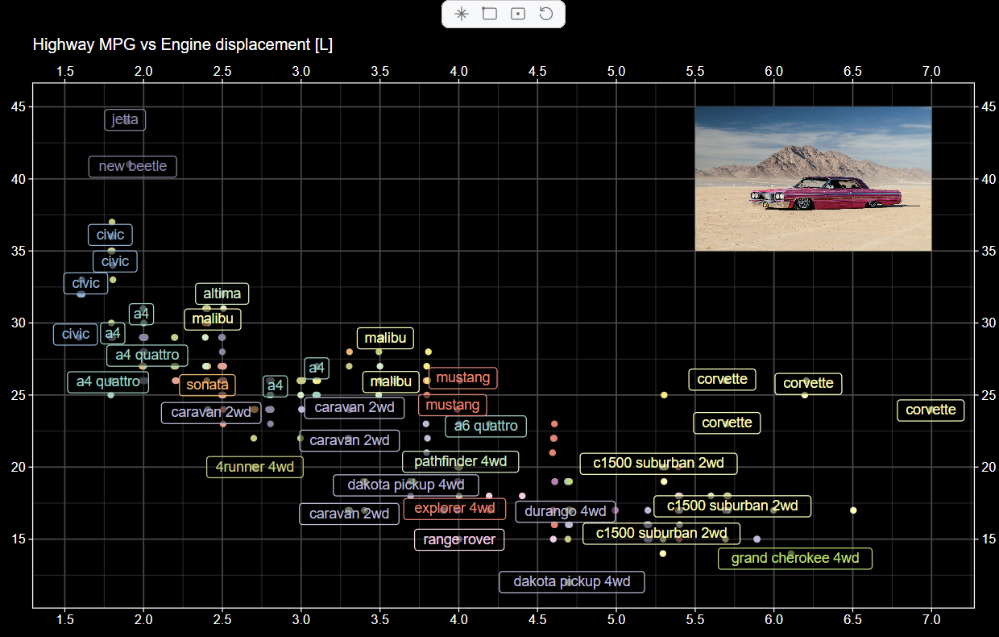
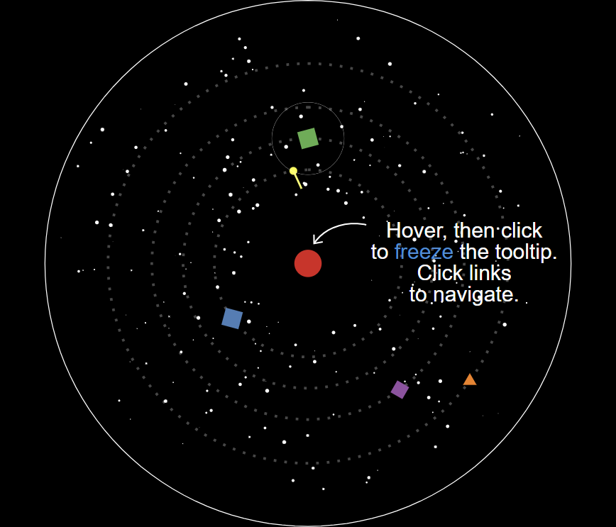
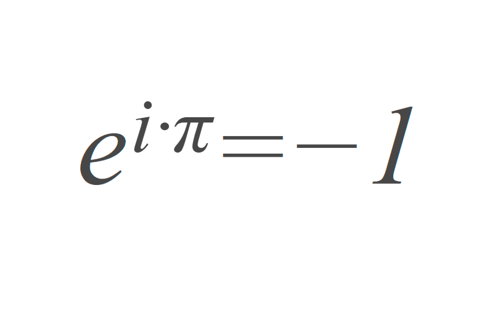
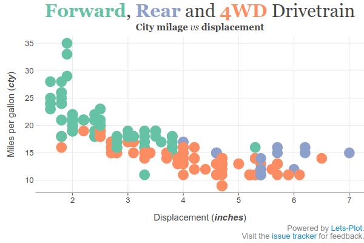

Miscellaneous
Panning and Zooming
Use the ggtb function to enable Pan and Zoom interactivity on a chart.
This function adds a toolbar containing three tool-buttons: pan, rubber-band zoom, and center-point zoom.

Extended Text Markup
In tooltips/labels/texts and wherever else there is text, you can use:
Interactive links, e.g.
<a href="https://github.com">GitHub</a>.See: lp_verse.ipynb

Limited LaTeX support:
superscript, e.g.
\( a^b \);subscript, e.g.
\( x_i \);Greek letters, e.g.
\( \Omega \), andsome special symbols, e.g.
\( a \cdot b \neq c \).
See: latex_support.ipynb

Limited markdown support:
emphasis (
*,**,***,_,__,___),coloring with inline style (
<span style='color:red'>text</span>),links with anchor tags (
<a href="https://lets-plot.org">Lets-Plot</a>), andmultiple lines using double space and a newline delimiter (
\n).
See: markdown.ipynb

Manual Legend
In Lets-Plot, as in ggplot2, legends are automatically generated based on the aesthetic mappings in the plot. Sometimes, however, this automatic generation doesn't provide the precise control needed for complex visualizations. Parameter manualKey and aesthetic parameters of the guideLegend() function addresses this limitation.
See: manual_legend.ipynb

Multiple Color Scales
Use colorBy/fillBy parameters and paint_a/paint_b/paint_c aesthetics if you need to display two different layers with the same color aesthetic but different color scales.
See: multiple_color_scales.ipynb

Scale Functions
To specify a scale for any group of aesthetics, use the special scale functions: scaleManual(), scaleContinuous(), scaleGradient(), etc.

Quantiles
Density-like plots let you show the quantiles by mapping them to a particular colour palette.
See: quantile_parameters.ipynb

Stackable Position Adjustments
To configure positioning where groups are stacked on top of each other, use the positionStack() and positionFill() functions.
See: position_stack.ipynb